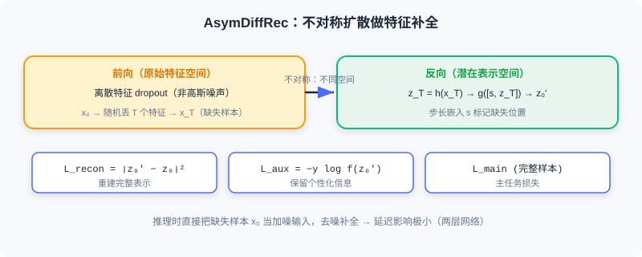

基于扩散的数据增强
📝 Before You Continue: 先读完 10.1 的前向/反向过程、条件生成与引导——本节的 DiffuASR、Diff-MSR 都是把「去噪生成」当作增强工具。
推荐系统面临的核心挑战是 数据稀疏性 ：交互数据天然长尾分布——少数热门物品积累大量交互，绝大多数物品记录极少。对新用户（冷启动）和低活跃用户，历史匮乏使偏好建模困难。传统增强（随机裁剪、重排）生成的样本质量有限，难捕捉潜在兴趣模式。
扩散模型的生成能力为此提供新思路：学习数据分布后，可生成高质量伪交互序列扩充训练数据。本节介绍两种代表： DiffuASR 生成用户历史的「前序」序列； Diff-MSR 利用跨场景知识迁移解决冷启动。
读完本节，你将能够：
- 描述DiffuASR 的三组件框架（前向/反向/引导）与 SU-Net 的序列处理
- 解释 舍入（Rounding）如何把连续嵌入映射回离散物品 ID
- 复述Diff-MSR 的「狗像猫」跨场景迁移直觉与四阶段流程
- 对比 两类引导（Classifier-Guided / Classifier-Free）在 DiffuASR 中的应用
- 完成 4 道分层练习题，巩固扩散做数据增强的主线
10.2.0 为什么用扩散做增强
序列推荐通过建模用户历史交互预测下一个物品，但面临 数据稀疏性 （大量用户-物品仅极少交互）与 长尾用户问题 （多数用户历史短于 10 条，效果显著下降）。传统增强难以生成「语义一致」的伪序列。
扩散模型的优势：它不是简单变换已有样本，而是 学习分布后生成新样本——生成的伪交互在语义上与真实历史一致，却补充了缺失的「前序」信息。
🧠 Mental Model: 补写回忆录
短序列用户像只记得最近几页的日记。DiffuASR 不是把现有页复印几份，而是读懂这几页的文风与主题，帮你补写前面可能经历的几页——补写内容与现有日记连贯，却让传记更完整。
10.2.1 序列增强：DiffuASR
DiffuASR 的核心思想：给定原始交互序列 ，生成对应的「前序」序列 （用户在 之前可能产生过的交互）。拼接后得更长更完整的历史，用于训练下游序列推荐模型。
整体框架
DiffuASR 含三个关键组件：
- 前向过程——将目标增强序列的物品嵌入逐步加噪。数据是嵌入矩阵 ， 为增强长度， 为嵌入维度。
- 反向过程——从噪声恢复嵌入序列 ，并通过 舍入（Rounding） 映射回离散物品 ID：
（余弦相似度，最近物品即输出）。这一步把连续生成转为可解释的物品序列。 3. 引导过程——确保生成序列与原始序列语义一致。引导信息来自原始序列的聚合表示 。

Sequential U-Net
标准 U-Net 为图像设计，直接用于序列嵌入会丢失序列维度信息。DiffuASR 提出 SU-Net ：
- 序列维度当通道 ：把 视为 个通道的「图像」。
- 重塑嵌入维度 ：每个 维嵌入重塑为 矩阵。
于是输入变成 通道、 的张量，可自然卷积；各通道独立处理，保留序列位置信息。SU-Net 主体含下采样、中间注意力层、上采样；时间步 与条件 通过加性融合注入各 ResNet 块：
为 的正弦位置编码， 经线性变换后加到各层输入，控制去噪方向。

引导策略
DiffuASR 提供两种引导，对应 10.1 的两种条件生成方法：
1. Classifier-Guided——用预训练序列推荐模型当「分类器」。因 是 前序， 首物品 可视为 的「下一个物品」，引导目标是让生成序列正确预测 ：
2. Classifier-Free——训练时随机丢弃条件向量，推理时线性组合：
更简洁高效，实际应用更常用。
训练与增强流程
训练 ：从原数据集选长度 > 的序列，前 个作增强目标，其余作 ，用真实前序监督扩散学习。增强 ：每用户序列执行引导反向去噪，生成前序 ，与原序列拼接形成增强训练数据 。DiffuASR 生成的序列可直接训练任何序列推荐模型，无需改架构，通用性强。
Analysis: DiffuASR 的价值在于「高质量 + 通用」——生成的伪序列语义一致，且与下游模型解耦。代价是需训练扩散+舍入，且生成质量依赖条件引导的强度 γ。
10.2.2 跨场景增强：Diff-MSR
多场景推荐（MSR）中，不同场景数据量悬殊：热门场景海量交互，新兴/垂直（冷启动）场景数据稀疏。导致冷启动场景参数难充分学习，且联合训练时易受热门场景 负迁移 影响。
Diff-MSR 的洞察来自 CV： 一张模糊的狗图可能像猫。在推荐嵌入空间，数据丰富场景的用户-物品嵌入适当加噪后，其「轮廓」可能与冷启动场景样本相似。借此从丰富场景「借」知识增强冷启动。
整体框架（四阶段）
- 预训练——用全场景数据训多场景骨干（如 MMoE），得共享嵌入层（跨场景通用表示）。
- 扩散——对每个冷启动场景训两个扩散模型（正样本/负样本），输入为用户特征与物品属性嵌入拼接 ，学习该场景数据分布。
- 分类——训二分类器判断（加噪）嵌入来自冷启动还是丰富场景。对丰富场景样本不同程度加噪，若被误判为冷启动，说明其「轮廓」相似，可被利用。
- 微调——用三类数据微调冷启动模型：误分类丰富样本去噪得的伪样本、纯高斯生成的伪样本、冷启动真实数据。

分类阶段是关键：对丰富场景嵌入 不同程度加噪得 ，若被误判为冷启动，说明这「模糊」样本在嵌入空间与冷启动相似——用冷启动扩散模型对 去噪，即得高质量冷启动样本。Diff-MSR 设计 分段噪声策略 ：前几步保持 较小以保留结构，之后线性增长——轻度加噪仍保留场景特征供判断，重度加噪确保收敛到高斯。
💡 Key Insight: 两类方法共同点——用扩散生成高质量伪交互数据，并用条件控制保证语义一致性。DiffuASR 借历史条件生成前序，Diff-MSR 借场景分布借力跨域。下一节看扩散在特征与多样性上的应用。
⚠️ Common Mistakes in 10.2
| # | Mistake | Example | Why It's Wrong | Fix |
|---|---|---|---|---|
| 1 | 以为扩散增强=复制样本 | 「把短序列复制几份当增强」 | 复制不增信息，难补前序 | 用扩散生成语义一致的新前序 |
| 2 | 忽略舍入步骤 | 直接用连续嵌入当推荐 | 下游模型要离散物品 ID | 用 Rounding 映射最近物品 |
| 3 | 混淆两类引导 | 「DiffuASR 必须用分类器引导」 | Classifier-Free 更常用更简洁 | 两者皆可，常用 Free |
| 4 | 误用 Diff-MSR 跨域 | 「冷启动直接用丰富场景原始样本」 | 分布不同会负迁移 | 加噪→误判→去噪生成伪样本 |
本章小结
📌 Key Takeaways
| Concept | Key Points | Why It Matters |
|---|---|---|
| DiffuASR | 前向/反向/引导三组件 + SU-Net + Rounding | 生成前序序列扩充短序列用户 |
| SU-Net | 序列当多通道图像 + 条件/时间步加性融合 | 保留序列维度信息 |
| 两类引导 | Classifier / Classifier-Free | 保证生成与原始语义一致 |
| Diff-MSR | 四阶段 + 分段噪声 + 「狗像猫」迁移 | 跨场景借力缓解冷启动 |
| 共同主线 | 生成伪交互 + 条件控语义 | 数据增强型扩散应用 |
❓ FAQ
Q1: DiffuASR 生成的「前序」有什么用？
A: 短序列用户历史不足，预测下一物品难。生成语义一致的前序 与原序列拼接，得到更长历史，提升下游序列推荐效果，且不与下游模型耦合。
Q2: 为什么舍入（Rounding）必要？
A: 扩散在连续嵌入空间去噪，但推荐要离散物品 ID 才能进下游模型。Rounding 取嵌入空间最近物品，把连续结果转回可解释 ID。
Q3: Diff-MSR 为何用「误判」筛选？
A: 丰富场景样本加噪后若被分类器误判为冷启动，说明其轮廓与该场景相似——这样的样本去噪后才是高质量冷启动伪样本，避免直接跨域的负迁移。
🔗 前后关联
- 10.1 （基础）DiffuASR 的引导、SU-Net 的条件注入、Diff-MSR 的扩散均建立在 10.1 机制上。
- 10.3 （应用）从「增强数据」转向「增强特征与多样性」。
- 5.3 / 9.x （生成式主线）扩散是生成式家族的连续空间分支，与自回归/推理互补。
Practice Problems
Work through all problems in order — they get progressively harder. Each has a complete solution you can reveal after trying it yourself.
Problem 10.2.1 — 框架归类 🟢 Easy
把下列组件归入 DiffuASR 三组件（前向 / 反向 / 引导）之一：
- (a) 把物品嵌入矩阵逐步加噪
- (b) 用 Avg(原始序列嵌入) 作为条件 c
- (c) 舍入映射回离散物品 ID
💡 Solution (click to reveal)
Approach: 对照三组件职责。
- (a) 前向过程
- (b) 引导过程（条件来自原始序列聚合）
- (c) 反向过程（去噪后 Rounding）
Key points:
- 前向=加噪；反向=去噪+舍入；引导=控语义一致。
Problem 10.2.2 — 舍入计算 🟢 Easy
去噪得某位置连续嵌入 ，物品词表 中三个候选的余弦相似度为：、、。请写出 Rounding 选出的物品。
💡 Solution (click to reveal)
Approach: 取相似度最大的候选。
最大值 0.91 对应 → 输出物品 A。
Key points:
- Rounding = 在词表中找最近邻。
- 把连续嵌入「解码」为离散 ID。
Problem 10.2.3 — SU-Net 设计 🟡 Medium
标准 U-Net 直接用于序列嵌入会丢什么？SU-Net 如何通过「序列当通道」与「嵌入重塑」解决？请说明条件与时间步如何注入。
💡 Solution (click to reveal)
Approach: 对照 SU-Net 设计。
问题： U-Net 为图像设计，直接吃序列嵌入 会丢失序列（位置）维度信息。
解决：
- 把 个位置当作 个 通道 ，序列维度转为通道维；
- 每个 维嵌入重塑为 矩阵，形成 通道 张量，可用卷积且各通道（位置）独立保留。
注入： 时间步 的正弦位置编码 与条件 加性融合 ，经线性变换加到各 ResNet 块输入，控制去噪方向。
Key points:
- 核心是「保序列维度」。
- 条件/时间步加性融合贯穿各层。
Problem 10.2.4 — 设计跨场景增强 🔴 Hard
某平台有「热门电商」与「新上线二手车」两场景，二手车数据极稀疏。请用 Diff-MSR 思路写四阶段流程，并说明「分段噪声策略」为何重要、以及用哪类伪样本微调冷启动模型。
💡 Solution (click to reveal)
Approach: 套用 Diff-MSR 四阶段。
- 预训练 ：全场景训 MMoE 得共享嵌入层。
- 扩散 ：为二手车场景训正/负样本两个扩散模型，输入为用户+物品属性拼接嵌入。
- 分类 ：训二分类器判嵌入来自二手车还是电商；对电商样本不同程度加噪，被误判为二手车的即「轮廓相似」可利用。
- 微调 ：用三类数据——误分类电商样本去噪得的伪样本、纯高斯生成的伪样本、二手车真实数据。
分段噪声重要性： 前期小 β 保留结构使分类器能判「轮廓」，后期线性增长确保最终收敛高斯——否则轻度加噪不足以产生可迁移样本、或重度加噪破坏结构。
Key points:
- 「狗像猫」：电商加噪误判为二手车即可借力。
- 伪样本 + 真实数据共同微调，防负迁移。
🏆 Challenge: 增强质量评估
DiffuASR 生成的伪序列若引导强度 γ 过大，可能过度贴合 而缺乏多样性；γ 过小则语义不一致。请写一段 200 字内，设计两个可计算的指标来评估增强数据质量（一个测语义一致性、一个测多样性），并说明如何据此调 γ。
💡 Hint
一致性：生成前序与 在嵌入空间的相似度（如平均余弦），或下游模型在「原+增强」上相对于「仅原」的精度提升。多样性：增强序列间的两两差异（如去重率、嵌入方差），或生成前序不同于训练集中已有前序的比例。γ 过大→一致性高但多样性低，γ 过小→反之；在两者 Pareto 前沿选平衡点的 γ。